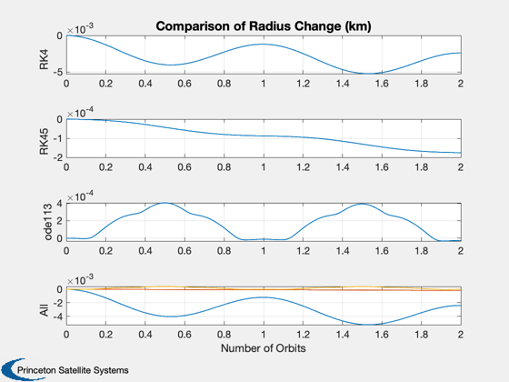

Integration accuracy study comparing RK4, RK45, and ode113.
Propagate a circular 7000 km orbit with each function and compare the results against a perfect circular orbit.
------------------------------------------------------------------------ See also Plot2D, Mag, RK4, RK45, JD2000, OrbRate, El2RV, Period, FOrb, FOrbHFOP ------------------------------------------------------------------------
Contents
%-------------------------------------------------------------------------- % Copyright (c) 2003 Princeton Satellite Systems, Inc. % All rights reserved. %--------------------------------------------------------------------------
Choose number of orbits to run:
%--------------------------------
nOrbits = 2;
Set up orbit and sim:
%----------------------
[r,v] = El2RV([7000 0.1 0 0 0 0]);
p = Period(7000);
dT = p/100;
t = linspace(0,nOrbits*p,100*nOrbits+1);
kPlot = linspace(1,length(t),2001);
w = OrbRate(7000);
rCirc = 7000*[cos(w*t); cos(0.1)*sin(w*t); sin(0.1)*sin(w*t)];
xRK4 = zeros(6,length(t));
xRK45 = zeros(6,length(t));
xODE = zeros(7,length(t));
xRK4(:,1) = [r;v];
xRK45(:,1) = [r;v];
xODE(1:6,1) = [r;v];
tRK4 = 0;
tRK45 = 0;
tODE = 0;
Info for ode113 propagation
%---------------------------- options = odeset('RelTol',1e-4); d = []; d.gravityModel.mu = 398600.44; d.gravityModel.s = []; d.gravityModel.j = []; d.jD = JD2000; d.nTess = 0; d.nZonal = 0; d.propagateEF = 0; d.planet = 'Earth'; d.thrustModelOn = 0; d.aeroModelOn = 0; d.solarModelOn = 0; d.planetaryDisturbancesOn = 0;
Run!
%------ hWait = waitbar(0,sprintf('PropagatorComparison: %d orbits',nOrbits)); for k = 1:length(t)-1 waitbar(k/(100*nOrbits)); tC = cputime; xRK4(:,k+1) = RK4('FOrb',xRK4(:,k),dT,t(k),'car'); tRK4 = tRK4 + cputime-tC; tC=cputime; xRK45(:,k+1) = RK45('FOrb',xRK45(:,k),dT,dT,0,1e-6,t(k),'car'); tRK45 = tRK45 + cputime-tC; tC=cputime; [tTemp,y] = ode113('FOrbHFOP',[0 dT],xODE(:,k),options,d); xODE(:,k+1) = y(end,:)'; tODE = tODE + cputime-tC; end close(hWait);
Prepare plots and printouts
%---------------------------- dRK4 = Mag( xRK4(1:3,:) - rCirc ); dRK45 = Mag( xRK45(1:3,:) - rCirc ); dODE = Mag( xODE(1:3,:) - rCirc ); rRK4 = Mag( xRK4(1:3,:) ) - 7000; rRK45 = Mag( xRK45(1:3,:) ) - 7000; rODE = Mag( xODE(1:3,:) ) - 7000; Plot2D( t/p, [rRK4; rRK45; rODE], 'Number of Orbits',char({'RK4','RK45','ode113','All'}),... 'Comparison of Radius Change (km)','lin',char({'[1]','[2]','[3]','[1 2 3]'}) ); fprintf('\nTime for RK4 propagation: %5.2g sec\n',tRK4); fprintf('Time for RK45 propagation: %5.2g sec\n',tRK45); fprintf('Time for ode113 propagation: %5.2g sec\n\n',tODE); %--------------------------------------
Time for RK4 propagation: 0.06 sec Time for RK45 propagation: 0.08 sec Time for ode113 propagation: 4.5 sec